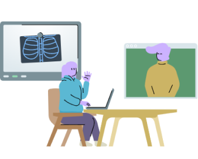

<div class="cuad p-4 p-md-5 mb-4 rounded text-body-emphasis bg-body-secondary">
  <div class="row">
    <div class="col-lg-7">
      <h1 class="tit display-4 fst-italic text-center text-lg-start">
        USO DE <span class="highlight">TECNOLOGÍA 3D</span> PARA MEJOR APRENDIZAJE
      </h1>
      <p  class="lead my-3 text-center text-lg-start">
        <svg xmlns="http://www.w3.org/2000/svg" width="24" height="25" viewBox="0 0 24 25" fill="none">
          <path d="M1 12.5C1 12.5 5 4.5 12 4.5C19 4.5 23 12.5 23 12.5C23 12.5 19 20.5 12 20.5C5 20.5 1 12.5 1 12.5Z"
            stroke="#0D6F80" stroke-width="2" stroke-linecap="round" stroke-linejoin="round" />
          <path
            d="M12 15.5C13.6569 15.5 15 14.1569 15 12.5C15 10.8431 13.6569 9.5 12 9.5C10.3431 9.5 9 10.8431 9 12.5C9 14.1569 10.3431 15.5 12 15.5Z"
            stroke="#0D6F80" stroke-width="2" stroke-linecap="round" stroke-linejoin="round" />
        </svg>
        Visualización precisa
      </p><br>

      <p class="lead my-3 text-center text-lg-start">
        <svg xmlns="http://www.w3.org/2000/svg" width="24" height="25" viewBox="0 0 24 25" fill="none">
          <path
            d="M2 3.5H8C9.06087 3.5 10.0783 3.92143 10.8284 4.67157C11.5786 5.42172 12 6.43913 12 7.5V21.5C12 20.7044 11.6839 19.9413 11.1213 19.3787C10.5587 18.8161 9.79565 18.5 9 18.5H2V3.5Z"
            stroke="#0D6F80" />
          <path
            d="M22 3.5H16C14.9391 3.5 13.9217 3.92143 13.1716 4.67157C12.4214 5.42172 12 6.43913 12 7.5V21.5C12 20.7044 12.3161 19.9413 12.8787 19.3787C13.4413 18.8161 14.2044 18.5 15 18.5H22V3.5Z"
            stroke="#0D6F80" />
        </svg>
        Aprendizaje autónomo
      </p><br>
      <p class="lead my-3 text-center text-lg-start">
        <svg xmlns="http://www.w3.org/2000/svg" width="24" height="25" viewBox="0 0 24 25" fill="none">
          <path
            d="M19 3.5H5C3.89543 3.5 3 4.39543 3 5.5V19.5C3 20.6046 3.89543 21.5 5 21.5H19C20.1046 21.5 21 20.6046 21 19.5V5.5C21 4.39543 20.1046 3.5 19 3.5Z"
            stroke="#0D6F80" />
          <path
            d="M8.5 10.5C9.32843 10.5 10 9.82843 10 9C10 8.17157 9.32843 7.5 8.5 7.5C7.67157 7.5 7 8.17157 7 9C7 9.82843 7.67157 10.5 8.5 10.5Z"
            stroke="#0D6F80" />
          <path d="M21 15.5L16 10.5L5 21.5" stroke="#0D6F80" stroke-width="2" stroke-linecap="round"
            stroke-linejoin="round" />
        </svg>Mejor acceso a muestras
      </p>
    </div>
    <div class="col-lg-5 text-center">
      
    </div>
  </div>
</div>
